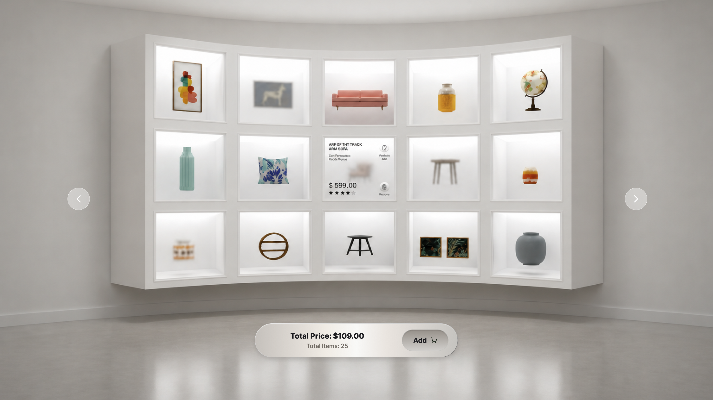
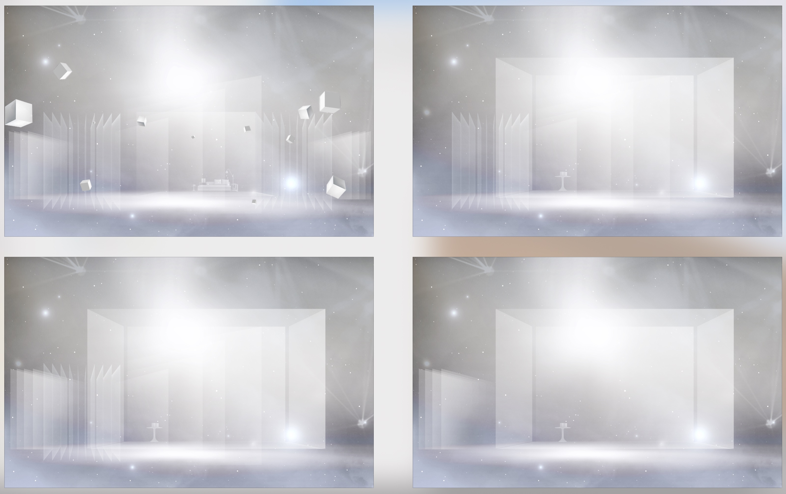

Walmart Immersive
Virtual reality retail for Walmart's Store No 8: shoppable rooms, product stories and avatars that turn browsing into a place you step into.

The problem
Walmart acquired Spatialand in February 2018 to explore how virtual reality could change shopping. The open question was what VR commerce should feel like for a mass-market customer, not a tech demo: how you enter, how you find products, and why you'd stay.
The approach
Designed The World of Walmart, an immersive environment you enter through a portal and move through as a series of shoppable rooms.
Built room sets around lifestyle collections (Glam and Farmhouse) where each product has its own story moment: the rug, the sofa, the lamp and the pillow each animate into focus with materials, context and price.
Designed the avatar and personalization layer ("Is this you?"), along with in-world alerts, product selection and the type system that carries pricing and calls to action in 3D space.
Results

Leadership
Led design from the first demo explorations in May 2018 through the 2019 World of Walmart program, working with the Spatialand team and Store No 8.